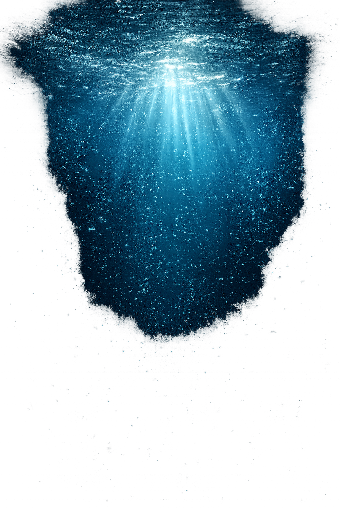

The Pirate Challenge
A multi-day adventure trail combining navigation, teamwork and ocean clean-up missions — designed to turn curiosity into lifelong stewardship of the sea.
Discover More →An immersive voyage where adventure meets purpose — uniting explorers, dreamers and changemakers to protect the oceans that connect us all.
Aye Maties was born from a simple belief: that adventure and responsibility can sail the same course. What began as a small band of ocean lovers has grown into a global pirate-spirited movement — turning curiosity about the sea into real, measurable change.
Every expedition, workshop and challenge we craft is designed with the same intention — to leave the water cleaner, the next generation more aware, and every guest forever changed by what lies beneath the surface.
We redefine what it means to explore — embracing the ocean, honouring its depths and uniting curious souls around a single, shared purpose: to protect the waters that connect us all.
Be a Part of Something Great
Every wave we protect, every shore we restore and every guardian we inspire is a chapter in a story far larger than ourselves — one written for the generations still to come.
From open-water expeditions to hands-on education, every offering is a chapter in the same story — saving our oceans, one challenge at a time.
A multi-day adventure trail combining navigation, teamwork and ocean clean-up missions — designed to turn curiosity into lifelong stewardship of the sea.
Discover More →Guided coastal and underwater missions where guests actively remove debris, document marine life and contribute to verified conservation data.
Discover More →Immersive educational journeys that bring marine science to life — empowering the next generation of ocean guardians through play, story and discovery.
Discover More →Purpose-driven team experiences at sea — blending leadership development with tangible environmental impact for forward-thinking organisations.
Discover More →Long-term partnerships with local communities to restore reefs, replant mangroves and rebuild fragile coastal ecosystems for future generations.
Discover More →Bespoke luxury voyages for individuals and families — a quiet, restorative journey across open water, paired with meaningful ocean encounters.
Discover More →"An experience that rewired how my children see the ocean. They didn't just learn about conservation — they lived it, hands in the water, hearts fully open."
"Beyond luxury — beyond adventure. The Pirate Challenge gave our team a shared purpose we still talk about, months later."
"Every detail felt considered — the boats, the guides, the silence of the sea at sunrise. A journey that changes how you live afterward."
"We came for an expedition and left as ocean advocates. Aye Maties doesn't sell a trip — it gifts a perspective."
Join the crew. Become part of a movement that turns wonder into action — and the ocean's future into ours.